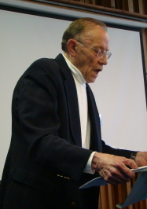

Charles L. Brewer,
Furman University,
Greenville, South Carolina, USA

|
UNDERGRADUATE EDUCATION:
RECENT DEVELOPMENTS IN THE UNITED STATES
During the past 20 years, teachers and researchers in the United States have devoted considerable attention to undergraduate education in psychology. Several reports and national conferences highlight the thinking of experts on most aspects of undergraduate programs. All of these reports and conference recommendations are based on the assumption that psychology is best taught as a rigorous scientific discipline embedded in the liberal arts tradition.
In 1988, the Association of American Colleges (AAC) began an extensive study of the history and present status of 12 undergraduate majors, including psychology. The American Psychological Association (APA) appointed five people to its own study group, and their report was titled “Liberal Education, Study in Depth, and the Arts and Sciences Major—Psychology.” After identifying eight common goals as guidelines to provide coherence to the curriculum, this group proposed two models for the undergraduate psychology major: the generalist model and a thematic model, with three variations. These psychologists included specific suggestions for academic courses and other learning experiences for each of these models.
The APA sponsored a National Conference on Enhancing the Quality of Undergraduate Education in Psychology held at St. Mary’s College of Maryland in 1991. Its specific goal “was to synthesize the scholarship and practice of the teaching and learning of psychology in order to produce a practical handbook for faculty who work with undergraduates in our discipline.” The report from this conference emphasized that the fundamental goal of undergraduate education in psychology is to teach students to think as scientists about behavior and experience. In addition, it identified six specific goals of the curriculum that complement this overarching goal. To accomplish these objectives, the conference report provided several suggestions about the structure of the psychology major, but concluded that no one curriculum is appropriate for every school and every student. Rather, all programs should reflect certain common characteristics and emphases that are summarized in the report’s recommendations and suggestions.
During the past decade, the APA has adopted “National Standards for High School Psychology Curricula,” which have implications for the collegiate introductory course, and “Guidelines for the Undergraduate Psychology Major.” In addition, the next “National Conference on Undergraduate Education in Psychology: Blueprint for the Discipline’s Future” will be held at the University of Puget Sound in Tacoma, Washington, during June 22-27, 2008. The goal of this conference is to examine critical issues and concerns in undergraduate education as well as important changes that have occurred since the St. Mary’s Conference in 1991.
In this talk, I will summarize the recommendations from several of these studies and conferences with the goal of providing an appropriate historical context for better understanding our present thinking about undergraduate education in psychology. Knowledge of past and present developments may help us to anticipate and plan for the future. Increased attention to these and related matters may help to improve the quality of teaching and learning.
Back to index of presentations
| |